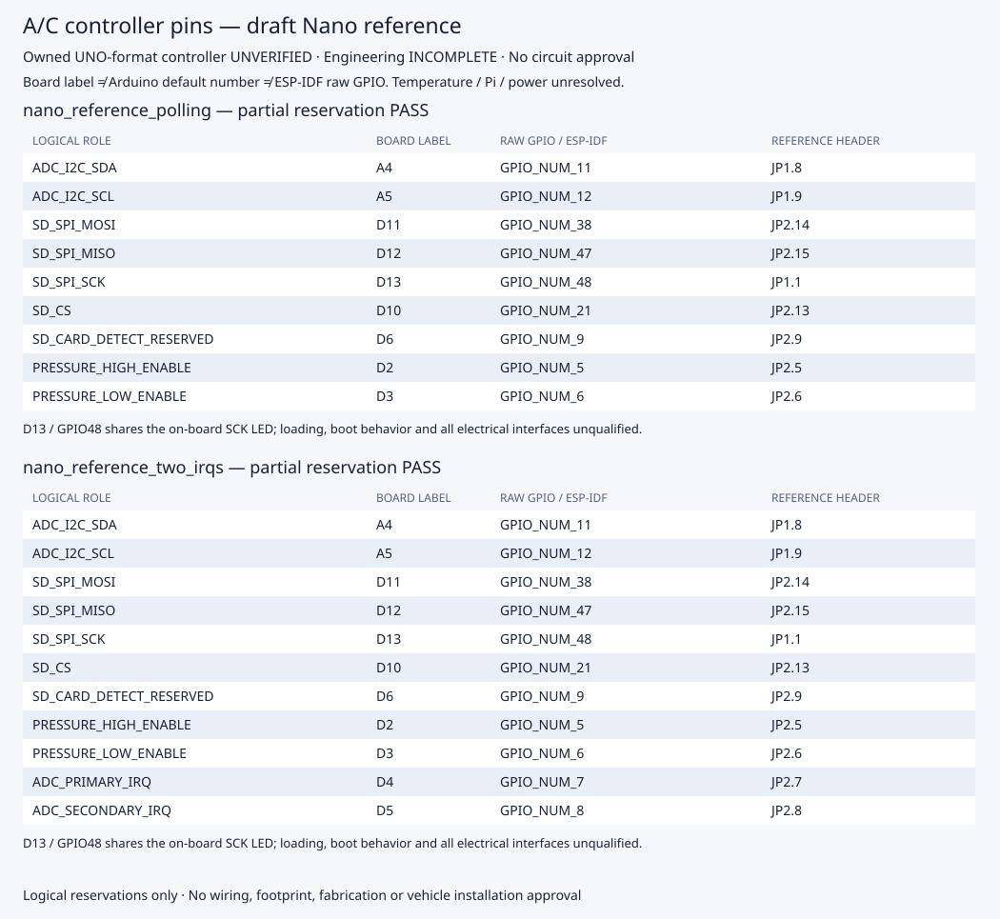

Engineering INCOMPLETE · Release BLOCKED · Owned controller unverified

Readable report · Machine report · Manifest
# Draft A/C controller pin reservations Engineering **INCOMPLETE**. Release **BLOCKED**. No controller or candidate selected. This partial reservation uses the documented Nano ESP32 reference. The later owned UNO-format candidate's identity, header map and power path remain unverified. ## nano\_reference\_polling Partial Nano baseline reservation for default ADC I2C, SD SPI, separate HIGH/LOW power enables and future custom\-socket detect\. No final controller, temperature interface, Pi link, switch polarity or physical wiring selected\. Necessary partial reservation: **PASS**. Complete controller assignment: **INCOMPLETE**. | Role | Nano label | Raw GPIO / ESP-IDF reference | Arduino default number | Drawing header | Necessary reservation | | --- | --- | --- | --- | --- | --- | | ADC\_I2C\_SDA | A4 | GPIO\_NUM\_11 | 21 | JP1\.8 | PASS | | ADC\_I2C\_SCL | A5 | GPIO\_NUM\_12 | 22 | JP1\.9 | PASS | | SD\_SPI\_MOSI | D11 | GPIO\_NUM\_38 | 11 | JP2\.14 | PASS | | SD\_SPI\_MISO | D12 | GPIO\_NUM\_47 | 12 | JP2\.15 | PASS | | SD\_SPI\_SCK | D13 | GPIO\_NUM\_48 | 13 | JP1\.1 | PASS | | SD\_CS | D10 | GPIO\_NUM\_21 | 10 | JP2\.13 | PASS | | SD\_CARD\_DETECT\_RESERVED | D6 | GPIO\_NUM\_9 | 6 | JP2\.9 | PASS | | PRESSURE\_HIGH\_ENABLE | D2 | GPIO\_NUM\_5 | 2 | JP2\.5 | PASS | | PRESSURE\_LOW\_ENABLE | D3 | GPIO\_NUM\_6 | 3 | JP2\.6 | PASS | Enable polarity, boot/pull network, signal drive, voltage and bus timing: **unqualified**. Card detect is reserved for a future custom socket. Optional IRQs do not select an ADC topology. D13 / GPIO48 also drives the on-board SCK LED; loading remains unqualified. Unallocated allowed header labels (not qualified spare capacity): A0, A1, A3, A6, A7, D4, D5, D7, D8, D9. ## nano\_reference\_two\_irqs The same unselected partial reservation with two optional ADC interrupt inputs\. These inputs preserve an option without selecting an ADC topology or implementing a timing schedule\. All complete electrical and controller contracts remain open\. Necessary partial reservation: **PASS**. Complete controller assignment: **INCOMPLETE**. | Role | Nano label | Raw GPIO / ESP-IDF reference | Arduino default number | Drawing header | Necessary reservation | | --- | --- | --- | --- | --- | --- | | ADC\_I2C\_SDA | A4 | GPIO\_NUM\_11 | 21 | JP1\.8 | PASS | | ADC\_I2C\_SCL | A5 | GPIO\_NUM\_12 | 22 | JP1\.9 | PASS | | SD\_SPI\_MOSI | D11 | GPIO\_NUM\_38 | 11 | JP2\.14 | PASS | | SD\_SPI\_MISO | D12 | GPIO\_NUM\_47 | 12 | JP2\.15 | PASS | | SD\_SPI\_SCK | D13 | GPIO\_NUM\_48 | 13 | JP1\.1 | PASS | | SD\_CS | D10 | GPIO\_NUM\_21 | 10 | JP2\.13 | PASS | | SD\_CARD\_DETECT\_RESERVED | D6 | GPIO\_NUM\_9 | 6 | JP2\.9 | PASS | | PRESSURE\_HIGH\_ENABLE | D2 | GPIO\_NUM\_5 | 2 | JP2\.5 | PASS | | PRESSURE\_LOW\_ENABLE | D3 | GPIO\_NUM\_6 | 3 | JP2\.6 | PASS | | ADC\_PRIMARY\_IRQ | D4 | GPIO\_NUM\_7 | 4 | JP2\.7 | PASS | | ADC\_SECONDARY\_IRQ | D5 | GPIO\_NUM\_8 | 5 | JP2\.8 | PASS | Enable polarity, boot/pull network, signal drive, voltage and bus timing: **unqualified**. Card detect is reserved for a future custom socket. Optional IRQs do not select an ADC topology. D13 / GPIO48 also drives the on-board SCK LED; loading remains unqualified. Unallocated allowed header labels (not qualified spare capacity): A0, A1, A3, A6, A7, D7, D8, D9. ## Scope and remaining evidence - The Nano is the documented focused baseline, not verified identity of the later owned UNO-format candidate. No electrical migration or final controller selection is made. - A necessary PASS covers only the declared partial header reservations. Temperature interfaces, Pi link, final power and the complete controller assignment remain unresolved. - Board labels, Arduino default pin numbers and raw ESP-IDF GPIO numbers are separate namespaces. Output GPIO_NUM tokens are reference facts, not generated firmware configuration. - UART and strapping exclusions and default-bus-only routing are conservative V1 policies. The manufacturer GPIO matrix permits other routes that need a separate review. - Independent pressure enable signals do not qualify a switch, polarity, reset-time state, pull network, drive/current, leakage, back-power or sequencing. - The card-detect signal reserves a future custom-socket input; it does not establish a selected socket or a card-detect capability on Adafruit #4682. - Optional IRQ reservations do not select an ADC topology, implement acquisition or prove a conversion schedule. - No actual board interrogation, wiring, circuit assets, footprints, nets, EDA generation or physical tests are performed. All fourteen product contracts remain incomplete. Canonical contract blockers: **14**. [Reservation diagram](pin-reservations.svg) · [Machine report](review.json) · [Manifest](manifest.json) Manufacturer reference facts were manually transcribed and hash-pinned. Byte identity does not establish independent engineering approval. - [arduino\-full\-pinout](https://docs.arduino.cc/resources/pinouts/ABX00083-full-pinout.pdf): Page 1 header labels/raw GPIO/default buses; page 3 advanced pin notes - [arduino\-reference\-schematic](https://docs.arduino.cc/resources/schematics/ABX00083-schematics.pdf): Sheet 1\: JP1/JP2 header numbering, GPIO0/46 boot straps, LED and USB nets; drawing V0\.3 / ABX00083 and ABX00092 - [espressif\-idf\-5\.5\.3\-gpio](https://docs.espressif.com/projects/esp-idf/en/v5.5.3/esp32s3/api-reference/peripherals/gpio.html): GPIO Summary\: strapping GPIO0/3/45/46; USB\-JTAG GPIO19/20; flash/PSRAM GPIO26\.\.37 Arduino pinout and schematic: © Arduino SA, [CC BY-SA 4.0](https://creativecommons.org/licenses/by-sa/4.0/). Reference facts transcribed; no endorsed or owned-board verification claim.